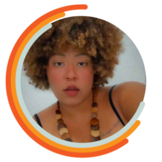
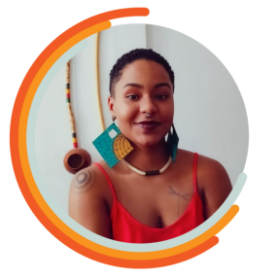
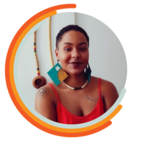
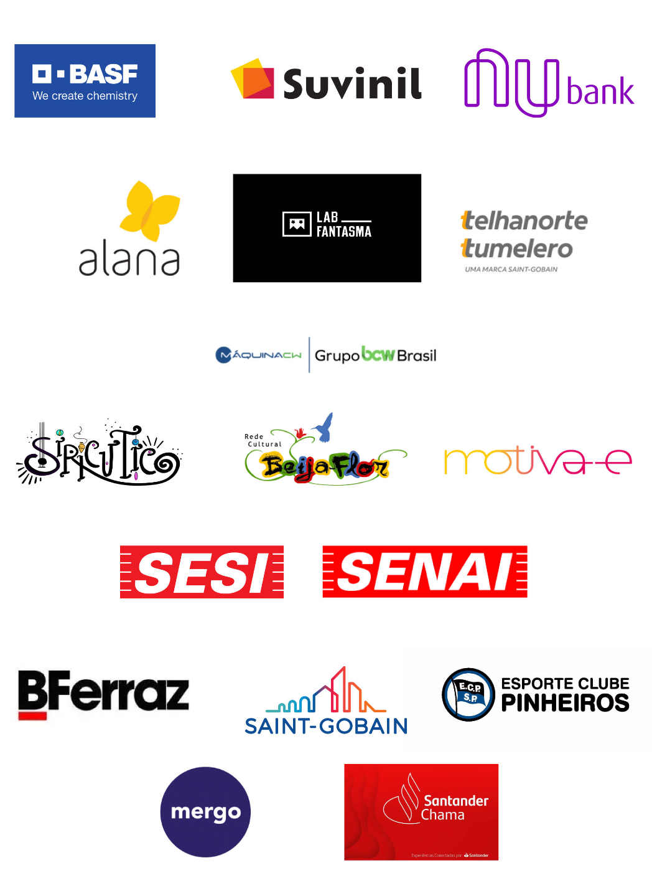
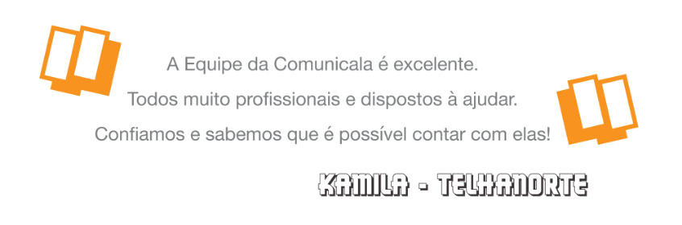

HOME
SOBRE
SERVIÇOS
CONTATO
COMUNICALA
A Comunicala nasceu com o objetivo de promover a inclusão e diversidades à comunidade surda através da tradução e interpretação no par linguístico Libras/Português, oferecemos acessibilidade em palestras, workshops, show, treinamentos e lives, além de serviços como legenda, audiodescrição e capacitação empresarial.
Somos uma empresa liderada por mulheres negras que acreditam que a soma de seus esforços e ações são capazes de gerar grandes revoluções.
Somos uma empresa liderada por mulheres negras que acreditam que a soma de seus esforços e ações são capazes de gerar grandes revoluções.


Desenvolver com excelência a prestação de serviço em acessibilidade, na busca pela satisfação das necessidades dos cooperados, clientes e
colaboradores.
colaboradores.
Ser reconhecida e consolidar-se como um grupo de mulheres destinado a garantir o respeito e convívio com as diferenças no sentido de assegurar os direitos da comunidade em relação às
diversidades.
diversidades.
• Motivação;
• Comunicação;
• Confiabilidade;
• Integridade;
• Acessibilidade;
• Etica.
• Comunicação;
• Confiabilidade;
• Integridade;
• Acessibilidade;
• Etica.
Nosso time
Ë uma mulher preta, intérprete de Língua Brasileira de Sinais atuante na cultura surda e na área de tradução/interpretação há 10 anos. Especialista em Tradução e Interpretação de Libras/Português pelo Instituto Singularidades. Mestranda em Linguística Aplicada e Estudos da Língua - PUC.
Ë uma mulher preta, intérprete de Língua Brasileira de Sinais atuante na cultura surda e na área jurídica de tradução/ interpretação. Mestranda em Linguística Aplicada e Estudos da Linguagem PUC/SP; Pós Graduada em Tradução e Interpretação de Libras-Português pelo Instituto Singularidades;
Ë uma mulher preta, tradutora e Intérprete de Libras-Português em contexto educacional, artístico, religioso, conferência e midiático. Especialista em Tradução e Interpretação de Libras/Português pelo Instituto Singularidades. Mestranda em Educação: Currículo - PUC/SP.

É uma mulher preta, intérprete de Língua Brasileira de sinais atuante na cultura surda e na área de tradução/interpretação há 3 anos. Graduanda em Letras-Libras. Pesquisadora de temas relacionados a musicalidade em Libras.
Ë uma mulher preta, intérprete de Língua Brasileira de Sinais atuante na cultura surda e na área de tradução/interpretação há 10 anos. Atuante na área audiovisual em contexto educacional, artístico, religioso, conferência e midiático.

Ë uma mulher preta, intérprete de Língua Brasileira de Sinais atuante na cultura surda e na área de tradução/interpretação há 10 anos. É arteducadora e pesquisadora de temas relacionados a corporeidade preta, musicalidade em Libras, diversidade e inclusão.
Ë uma mulher preta, tradutora e Intérprete de Libras-Português em contexto educacional, artístico, religioso, conferência e midiático. Especialista em Tradução e Interpretação de Libras/Português pelo Instituto Singularidades. Graduada em Gestão de Recursos Humanos pela Faculdade das Américas.
 

Nossos clientes


GUILHERME FALCÃO & STUDIORLSKULL
2023 - TODOS OS DIREITOS RESERVADOS
A Comunicala vem com a proposta de inserir intérpretes pretas em todos os espaços. Fazendo assim, o dinheiro transitar entre os nossos.
MAPA DO SITE
CONTATOS

(11) 99931-7989